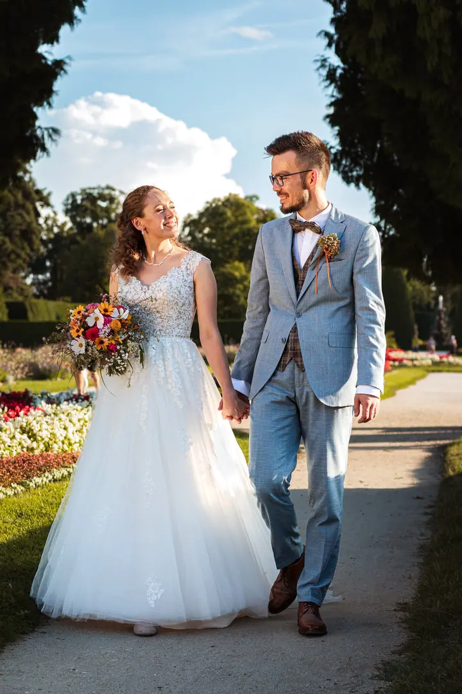

jedna
Svatební fotografie
Váš den fotím s pokorou a snažím se ho nijak nenarušovat. Chci zachytit emoce, prostředí a atmosféru, abyste se k těm chvílím mohli při prohlížení fotek vracet.

Svatební a produktový fotograf · Brno, celá ČR

Jmenuji se Ondra a jsem fotograf z Brna, který jezdí fotit svatby po celé republice. Kromě svateb fotím jídlo pro restaurace, produkty pro e-shopy a portréty na přirozeném světle.
Více o mně
Co fotím
jedna
Váš den fotím s pokorou a snažím se ho nijak nenarušovat. Chci zachytit emoce, prostředí a atmosféru, abyste se k těm chvílím mohli při prohlížení fotek vracet.
dvě
Nafotím menu pro vaši restauraci, kavárnu nebo sociální sítě. S řadou podniků spolupracuji dlouhodobě.
tři
Menší produkty fotím v ateliéru, další v přirozeném prostředí a oblečení na modelu venku na přirozeném světle. Styl ladím podle vašeho e-shopu nebo sociálních sítí.
Nejraději fotím venku na přirozeném světle. Chci, aby z fotky bylo vidět nejen jak vypadáte, ale i kdo opravdu jste.
Den patří vám, já se snažím co nejméně zavazet.

Za objektivem
Před deseti lety jsem dostal do rukou první zrcadlovku a od té doby je focení mým velkým koníčkem. Začínal jsem na akcích s turistickým oddílem, kde jsem působil jako instruktor, a na drobných zakázkách pro známé. Postupně jsem začal oslovovat restaurace a podniky a s mnoha z nich dnes spolupracuji dlouhodobě.
Mimo focení pracuji jako zdravotnický záchranář na Klinice anesteziologie, resuscitace a intenzivní medicíny ve Fakultní nemocnici Brno. Focení je pro mě odreagováním a duševním odpočinkem od světa zdravotnictví.
Zakládám si na seriózním, ale přátelském přístupu, na dobré komunikaci a spolehlivosti. Chci pro vás být profesionálem, kterého hledáte, a přitom působit lidsky. Fotky se snažím dodávat co nejdříve, dokud jsou vzpomínky ještě čerstvé.
Ondřej
Před svatbou se většinou potkáme u kávy, trochu se poznáme a probereme, co od fotek čekáte.
Společně vymyslíme, kdy v harmonogramu bude skupinové a párové focení a kolik mu dáme času, abych vás neodtrhával od rodiny a přátel déle, než budete chtít.
Fotím podle plánu ze schůzky a funguji samostatně. U celodenního focení nemám pevný čas, přijedu, kdy bude třeba, a odjedu, až nebude co dokumentovat.
Náhledy nejlepších fotek pošlu do 1 až 2 týdnů, kompletní fotky garantuji do 6 týdnů od svatby. Dostanete je v plné kvalitě i zmenšené pro snadné prohlížení.
Portfolio
Fotografie jsou ilustrační
Otázky
Pro rok 2026 začínají balíčky na 8 000 Kč za obřad se skupinovým a novomanželským focením. Základ s 8 hodinami focení vychází na 14 000 Kč, celodenní focení na 18 000 Kč a nadstandard s předsvatebním focením na 21 000 Kč.
Ano, svatby fotím po celé České republice. Doprava do 50 km od Brna je zdarma, dál účtuji 8 Kč za kilometr.
Náhledy nejlepších fotek pošlu do 1 až 2 týdnů, ať je můžete sdílet, dokud je to aktuální. Všechny fotky garantuji do 6 týdnů, reálně je ale dodávám dříve. Všechny svatební fotky pečlivě zálohuji.
Ano. Focení jídla začíná balíčkem Mini za 1 800 Kč, produktovou fotografii počítám hodinově, 450 Kč za hodinu focení a 350 Kč za hodinu postprodukce. Rád vám připravím nabídku na míru.
Napište pár vět o tom, co si představujete. · +420 778 151 520